Thabiso, 22
Matric Graduate · Kimberley
Goal:
IT Support role at a local company
Pain Points:
No CV, never had an interview, doesn't know what ATS means

Nomsa, 26
Diploma Holder · Galeshewe
Goal:
Admin or office management position
Pain Points:
Applied to 50+ jobs with no response; CV is not ATS-friendly
Lungi, 29
Self-Taught Coder · Roodepan
Goal:
Junior developer role at a tech startup
Pain Points:
No formal qualifications; fails interviews due to nerves and poor prep